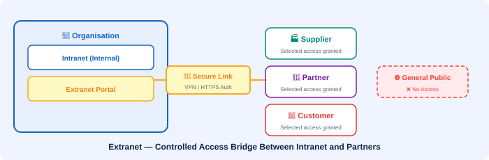

🤝 Extranet
A controlled extension of an intranet to trusted external partners

An extranet falls between the Internet and an organisation's intranet. Only selected outsiders — such as customers, suppliers, or other trading partners — are allowed to access the extranet. It gives controlled external access to parts of an organisation's internal resources.
What is an Extranet?
An extranet extends an organisation's intranet to selected external parties. Think of it as a secure "bridge" between the organisation's private network and the public Internet — it selectively opens specific parts of the intranet to trusted external users without exposing everything to the general public.
Who Can Access an Extranet?
- 🏭 Suppliers — to check purchase orders, inventory levels, or invoices
- 🤝 Business partners — to collaborate on joint projects
- 🛒 Customers — to track orders, access account information, or use support portals
- 📦 Distributors — to access product catalogues and pricing
- 🏦 Financial institutions — for secure transaction data exchange
Extranet vs Intranet vs Internet
| Feature | Intranet | Extranet | Internet |
|---|---|---|---|
| Access | Internal staff only | Trusted external parties | General public |
| Scope | Within the organisation | Between organisations | Worldwide |
| Security | Very high (firewall-protected) | High (authenticated access) | Open (public) |
| Content | All internal resources | Selected/shared resources | Public websites |
Real-World Extranet Examples
📌 Common Extranet Use Cases
- Supplier portals — e.g. Walmart's Retail Link lets suppliers see real-time sales data
- Banking partner portals — banks share financial data with corporate clients
- Healthcare networks — hospitals sharing patient data with insurance companies
- University student portals — allowing registered students to access internal academic resources
💡 Key Fact: Extranets provide the benefits of intranet-level collaboration to external parties without compromising full organisational security. They typically use VPN tunnels or secure HTTPS authentication to protect data in transit.